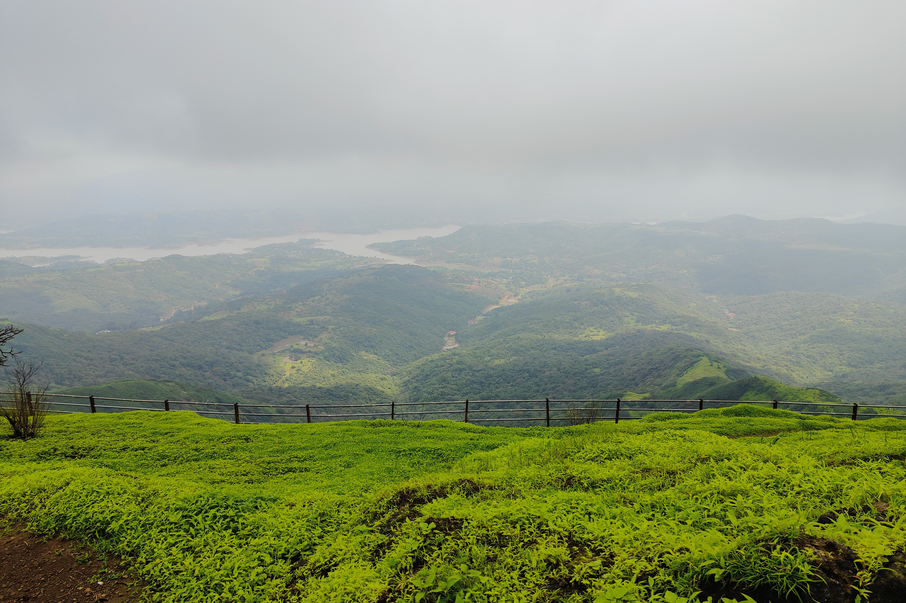
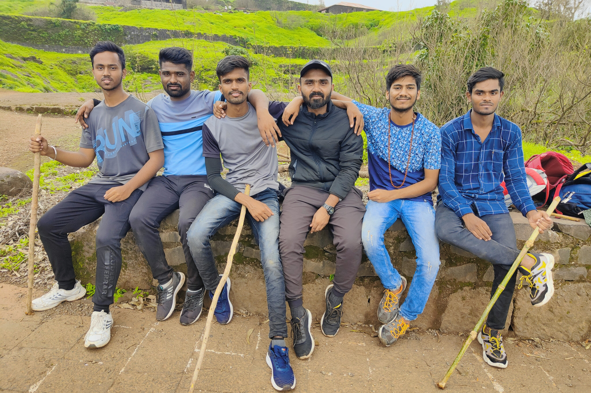
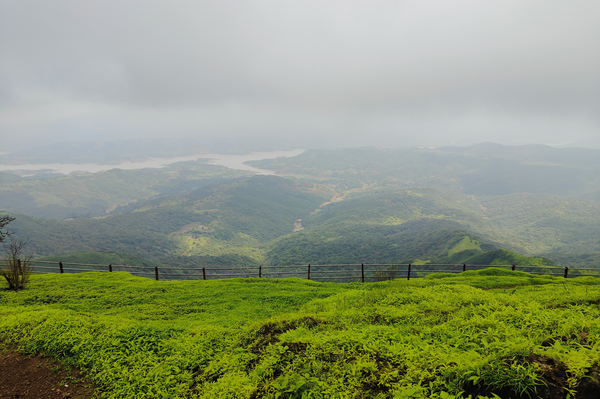
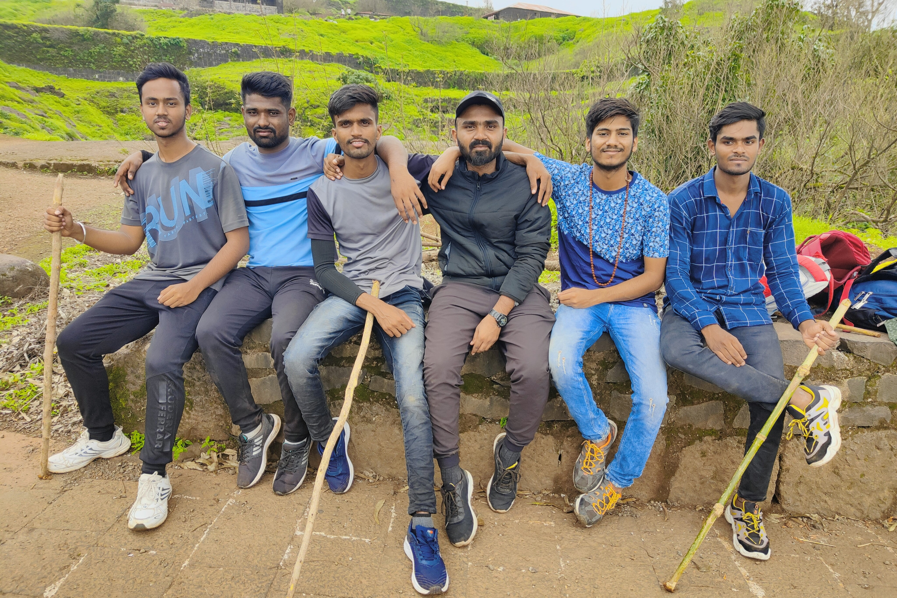

Rajgad
Rajgad, this majestic fort was the capital of the Maratha Empire till 1672 CE.
Earlier known as Murrumba Devacha Dongar was made one of the unconquerable forts of Medieval
Maharashtra by the founder and architect of the Maratha Empire Chhatrapati Shivaji Maharaj.
History
Rajgad, literally meaning 'Ruling Fort was content ital of the Maratha Empire established by Chhatrapati Shivaji Maharaj for 24 years.
Rajgad is divided into two main parts as the lower fort and the upper fort. The upper fort comprises the Balekilla, where the royal residence was built. The Lower fort is made of three arms of the hill. Rajgad is located on the triangular tabletop of the hill. These three arms are named Suvela Machi, Padmavati Machi and Sanjivani Machi. Padmavati Machi got its name from the temple of Goddess Padmavati and the small reservoir of the same name.
Numerous structural remains and plinths of the palaces and houses can be seen here. There are remains of the office of the Maratha empire and the marketplace. This fort was the home of Chhatrapati Shivaj Maharaj. It has witnessed different phases of his life, from the young sixteen-year-old Shivaji constructing the fort to becoming a King.
The young sixteen-year-old Shivaji had captured the Torna fort and had found a gold hoard. The gold found in the hoard was used to build a fort on Murrumba Devacha Dongar, and the fort was then named Rajgad'. This fort was then the capital of the Marathas which housed and protected the King and his soldiers for many years.
Gallary


 


